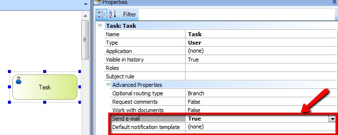
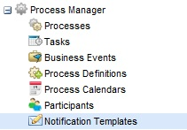
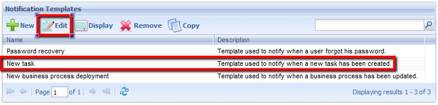
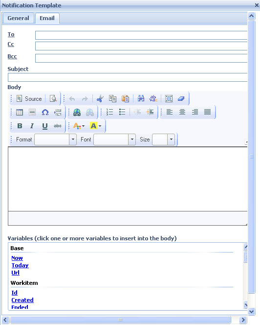
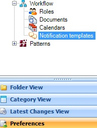
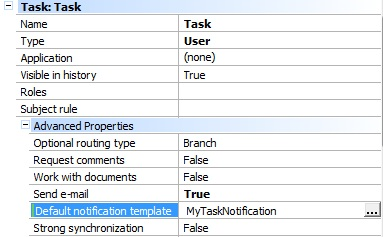

When a task is set to send notification emails, you can either customize the email that will be sent or create a new notification and customize it.  When using the default notification (at present, nothing needs to be assigned to the Default Notification Template property), access the GXflow client and in the Process Manager - Notification Templates option select the New task notification and then the Edit button, as shown in the images below: 

 Here you can configure the users who will receive the email by clicking on “To,” “CC,” and “BCC.” Also, you can set the subject and body of the message. If you don't use the default notification you need to create a new notification in the IDE, associate it with the tasks, and then edit it from the GXflow client as shown in the images below. 

|